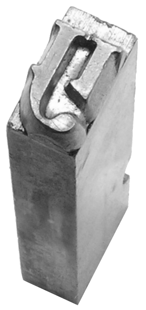

Merriam-Webster defines the z-axis as “one of the axes in a three-dimensional rectangular coordinate system.” This description is vague and elusive, but essentially, three recorded dimensions exist in our visual perception of the world. The aforementioned rectangular coordinate system which exists now, in our computers as data points, creating an artificial dimensionality that replicates what our eyes see in the natural world, took the entirety of human existence to achieve.
sumerian tablet
Humans have existed on the earth for around 200,000. Yet, the first written and recorded language civilization knows of is the Sumerian language, which originated around 3100 bce. Early written languages were carved into stone and into mud, these letterforms existed in 3-dimensional space. Visual perception can read them as flat, and thus language transferred to papyrus, parchment, and finally paper in two-dimensional space.
However, in order to expedite this process of generating two-dimensional texts, woodcut and subsequently metal type inverted etched letterforms into typographic reliefs. So, the letterform existed in space, with three dimensionality once again.

Metal Type
When I used to think of 3-D typography, I would think of Microsoft word 3D effects that attempt to replicate shadow and light cast across a letterform. However, now, with more awareness of typographic history, and contemporary digital technologies, I see how diverse and complex the lineage leading up and following those camp-at-best, tacky-at-worst Microsoft effects is. Because to make the jump from 2-D drawn 3-D type, to realistically rendered 3-D images requires complex mathematical formulas to calculate light reflection, dimensional scale distortion, etc.
Linear perspective study for The Adoration of the Magi - Leonardo Da Vinci
These formulas and calculations are results of science and art from millennia past. Looking at 3-D typography in Cinema4D directly ties back to Renaissance artists creating rules for rendering perspective, and scientists studying light ray refraction. Within the overarching 3-D type category, there are a number of ways of implementing this effect on a website:

As on the Van Holtz site, Type can be stretched to appear as though it’s moving towards the horizon.

It can be incorporated as a 3D interactive landscape, like on the SBS website.
It can be flat type projected onto a 3D object, that warps the type as it moves through z-space.
Finally, as in the Glonuts site, it can be approximated with shine and shadow effects, and dropped into the web as a png.
Ultimately, what’s the point of dimensional typography? First off, it looks cool. But why? It invites us in, calling on the viewer to touch it, feel it, exist beside it. A flat logo suddenly has heft, a call to action has physical gravitas. 3-Dimensional type pulls you into a digital reality, collapsing the space between life and the artificial mirror humans have constructed of that reality referred to as the internet.